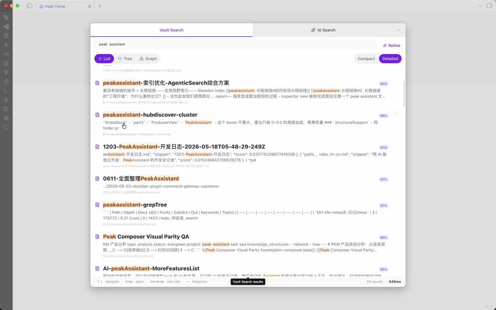

Canvas
bg-secondarySurface
surfaceSunken
sunkenText
text-primaryBorder
borderAccent
accent这里故意不复刻完整 Search、Composer 或 Graph。固定内容、固定几何、固定状态，让颜色、字号、密度、圆角、阴影和动效的差异一眼可见。
主题必须同时维持层级、可读性、语义状态和 elevation，而不只是换一个品牌色。
bg-secondarysurfacesunkentext-primaryborderaccent2xl知识工作台lgDesign System Migrationmd把分散的视觉决策收敛为共享语义角色。xsdocs/superpowers/specs · edited 2h ago按钮、选择、输入、状态和设置行先形成统一语气，再被产品场景组合。
每个场景只留下决定主题观感的结构与关键状态。内容和几何固定，便于横向比较 Theme Pack。
Peak 管理的界面应当完全拒绝 Obsidian 主题侵入，同时允许自己的 Theme Pack 统一切换。
先把组件映射到语义 token，再逐个收敛历史局部样式。
上面调好 Theme 后复制当前 JSON；随后在 Codex 中打开本 HTML，要求它按 JSON 重新生成下面四张图。Codex 读取固定清单并覆盖固定输出文件，刷新本页即可看到结果，不需要上传图片或复制另一段 Prompt。
theme-concepts/manifest.json 登记的图片和只读来源。docs/ui-system/theme-concepts/current/*.jpg；不得覆盖 evidence 目录。
current/search.jpg
current/composer.jpg
current/graph.jpg
current/chat.jpg